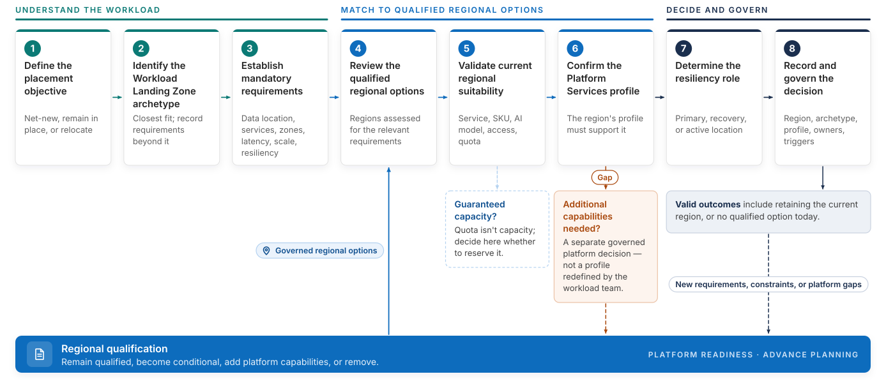

Place a workload only after its requirements are understood well enough to make a decision. Regional qualification narrows the choices; it does not permanently approve a region for every application.
Qualification versus placement#

new findings
The eight placement steps#
Placement ends in one of these outcomes: place the workload in a qualified region, keep it where it is, relocate it, extend it to another region for recovery or active use, or conclude that no qualified option meets its requirements yet.


For each workload or related application portfolio:
- Define the placement objective. Is the workload new, staying where it is, or moving or expanding to another region?
- Identify the Workload Landing Zone archetype. Assess the workload's connectivity, shared-service, data, security, operational, and dependency characteristics and pick the closest-fitting archetype. Record any material requirements it doesn't cover as explicit additions to it.
- Establish mandatory requirements. Confirm data-location restrictions, required Azure services and features, availability-zone requirements, latency thresholds, expected scale, connectivity, resiliency requirements, and critical dependencies.
- Review qualified regional options. Consider regions previously assessed against the relevant workload requirements. Review their supported capabilities, Platform Services profiles, readiness, known constraints, when each was last assessed, and any outstanding validations. See Assessment outcome.
- Validate current regional suitability. Qualification was an earlier planning assessment, so re-check the target region before onboarding, whether the workload is new or moving. Confirm that the services, SKUs, AI models, regional access, quota, and dependencies it needs are available now. Quota allows deployment but doesn't guarantee capacity. If the workload needs guaranteed capacity, decide here whether to reserve it.
- Confirm the region's Platform Services profile supports the workload. Check that the region's Platform Services profile satisfies the workload's requirements. If additional platform capabilities are required, treat their introduction as a separate governed platform decision rather than allowing the workload team to redefine the regional profile independently.
- Determine the workload's resiliency role. Define whether the region will support the workload as its primary location, recovery location, or as part of a multi-region active deployment. Apply workload-specific availability, RTO, RPO, replication, data-consistency, and failover requirements. See Service Guides for Multi Region.
- Record and govern the decision. Document the selected region, Workload Landing Zone archetype, Platform Services profile, placement and resiliency outcomes, assumptions, constraints, owners, and revalidation triggers.
Feed findings back into qualification#
Workload onboarding can reveal new regional requirements, constraints, or platform gaps. Use these findings to update regional qualification and determine whether an option should remain qualified, become conditional, require additional platform capabilities, or be removed from consideration for the affected workload requirements.